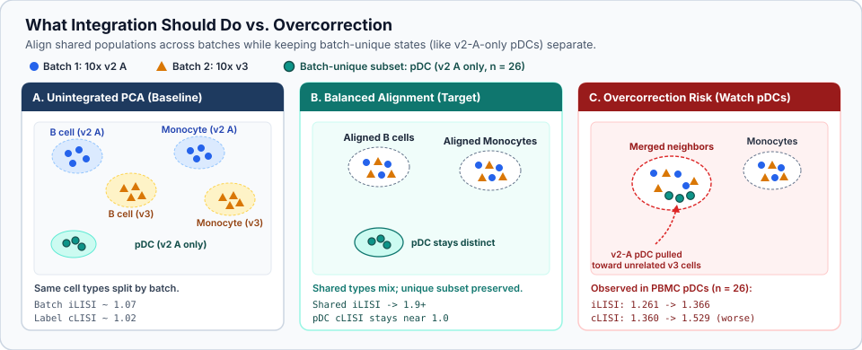
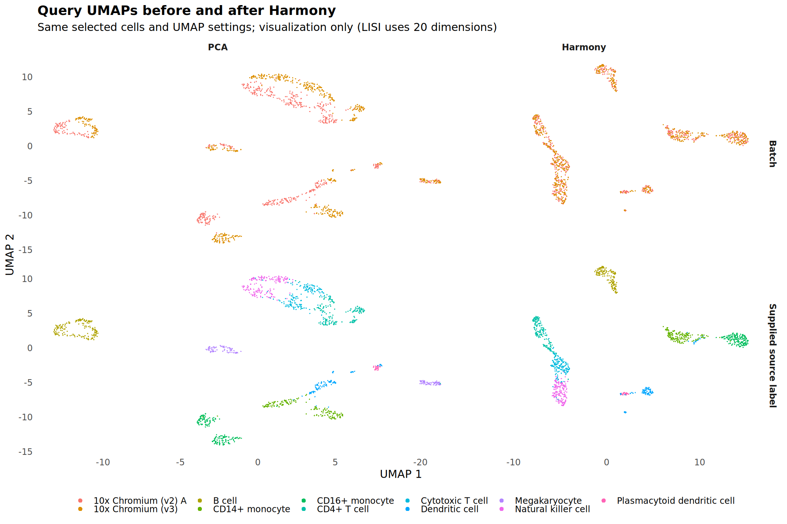
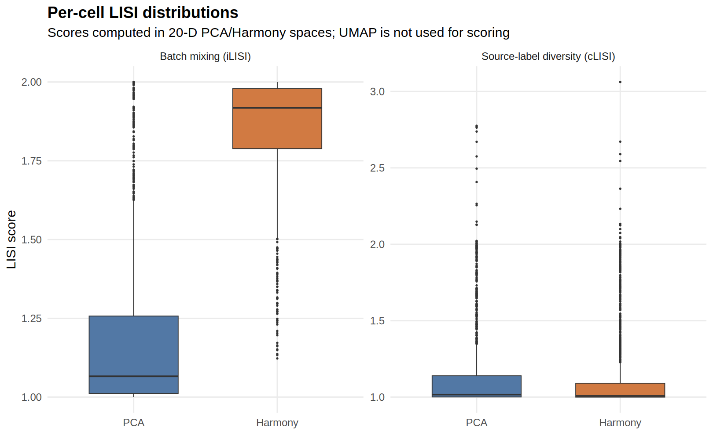

scRNA-seq Integration: Harmony, RPCA, and CCA
Nasir Mahmood Abbasi, PhD
Bioinformatics Educator
Worked example updated .
When you combine single-cell RNA-seq libraries across sequencing chemistries, donors, or labs, the same cell type often splits into separate clusters by batch rather than biology. Integration algorithms align shared cell states across batches so you can cluster and annotate them together, without merging distinct or batch-unique populations.
What you will do (Hands-on lab, ~30 min): Compare unintegrated PCA against Harmony on 1,149 public PBMC query cells sequenced with 10x Chromium v2 and v3, measure batch mixing (iLISI) and cell-type purity (cLISI) in 20-dimensional space, and inspect a rare batch-unique population where integration creates false mixing.
Prerequisites and scope: Assumes familiarity with single-cell normalization and PCA and cell-type annotation. The PCA to Harmony workflow and LISI metrics were executed in R for this lesson with downloadable scripts and outputs; Seurat v5 RPCA, CCA, and scVI/scANVI are covered as unexecuted comparison guides.
1. Design the comparison and inspect batch balance
A batch effect is systematic variation introduced by technical factors (such as library chemistry, capture lane, or sequencing depth) rather than cell identity. Before running any correction tool, verify that your batches share comparable cell types and record how many cells each batch contributes to each population.
This lab uses the public pbmcsca.SeuratData 3.0.0 PBMC dataset from SeuratData, published by Ding et al. (2020). The two query batches are genuine library-chemistry groups, 10x Chromium (v2) A and 10x Chromium (v3), rather than an artificial split of one count matrix. A third group (10x Chromium (v2) B) is held out as the reference for the annotation tutorial and never enters this integration run.
| Source Method | Role | Raw cells | Eligible (> 200 genes, valid label) | Selected (<= 80 / stratum) |
|---|---|---|---|---|
| 10x Chromium (v2) A | Query | 3,222 | 2,992 | 590 |
| 10x Chromium (v2) B | Reference (held out) | 3,222 | 3,011 | 537 |
| 10x Chromium (v3) | Query | 3,222 | 2,993 | 559 |
The script keeps cells with more than 200 detected genes and valid supplied CellType labels (excluding empty, Unknown, or Unassigned), then samples up to 80 cells per (Method, CellType) stratum with seed 20261023. Smaller strata are kept whole. Capping prevents abundant monocytes and CD4+ T cells from dominating pooled medians, yielding 1,149 query cells across 9 categories (not natural blood proportions).
Why integration is a question, not an obligation: Shared cell types make cross-batch alignment possible, whereas a cell state restricted to one batch has no cross-batch counterpart to align. Always check your batch-by-cell-type counts first: forcing a batch-unique population to mix with another batch pulls it into unrelated cell types (overcorrection).

2. Run preprocessing and Harmony on PCA coordinates
Download the worked-example bundle, follow its setup instructions (Ubuntu 24.04), and inspect the full R script. The input archive is fetched from its public repository and verified against a pinned SHA-256 checksum.
cd pbmc-methods-worked-example
# On Ubuntu 24.04, complete the package setup in README.md first.
python3 prepare_inputs.py --data-dir data
Rscript run_example.R \
--data-package data/pbmcsca.SeuratData_3.0.0.tar.gz \
--output reproduced-resultsTested environment: R 4.3.3; Seurat / SeuratObject 5.0.1 (with options(Seurat.object.assay.version = "v3") to construct a classic single-matrix RNA assay); SingleR 2.4.1; scuttle 1.12.0; scran 1.30.2; Harmony 1.2.3; LISI 1.0; ggplot2 3.4.4. Preprocessing selects 2,000 highly variable genes (HVGs), runs log normalization (scale.factor = 10000), scales those variable features, and computes 20 PCs on one thread with seed 20261023.
Expected output: On a single thread, the full script finishes in roughly 80-90 seconds (82.1 s in the recorded run), writes 14 CSV tables, 4 PNG figures, run_summary.json, and sessionInfo.txt into reproduced-results/, and prints:
Completed public pbmcsca worked example. Selected query cells: 1149; reference cells: 537; output: reproduced-resultsWhy Harmony adjusts PCA coordinates instead of RNA counts
Harmony (Korsunsky et al., 2019) operates in low-dimensional PCA space rather than altering the gene expression matrix. It alternates between two steps: grouping cells into soft clusters with a batch-diversity penalty, then computing linear ridge-regression offsets per centroid to shift batch-specific cells closer together.
# Excerpt from run_example.R: Harmony 1.2.3 on 20 unintegrated PCs
query_harmony <- harmony::RunHarmony(
object = query,
group.by.vars = "batch",
reduction.use = "pca",
dims.use = 1:20,
theta = 2,
lambda = 1,
max_iter = 10,
ncores = 1
)theta = 2sets the soft-cluster diversity penalty. Raisingthetapushes batches to mix more aggressively, increasing the risk of merging batch-unique or disease-restricted states into unrelated clusters.lambda = 1sets the ridge-regression penalty that shrinks batch correction offsets, guarding against overcorrection when a cluster is dominated by one batch.max_iter = 10caps optimization rounds (Harmony 1.2.3 and newer 2.x releases usemax_iter, whereas older pre-1.0 versions usedmax.iter.harmony).
Keep raw RNA counts untouched for downstream expression tests: Integration creates aligned coordinates for clustering and neighbor graphs, not biological replicates or batch-corrected gene counts. In run_example.R, an explicit check verifies that the raw RNA counts before and after RunHarmony() are identical. Always run differential expression on the uncorrected RNA assay using a sample-aware design.
3. Score batch mixing and label purity in 20D space
Visual UMAP overlap can mislead because UMAP warps global distances and changes layout across random seeds. To measure integration quantitatively, we use lisi::compute_lisi() (Local Inverse Simpson's Index) directly on the 20-dimensional PCA and Harmony embeddings, never on 2D UMAP coordinates.
With perplexity = 30, LISI builds a Gaussian kernel over roughly 3 * perplexity = 90 nearest neighbors per cell (meaning you need at least 91 cells) and reports the effective number of categories present in that local neighborhood. Before scoring, the script enforces exact row-order and missingness invariants so every cell in PCA pairs 1-to-1 with the same cell in Harmony.
# Invariants checked in run_example.R before paired scoring
stopifnot(identical(rownames(pca_coordinates), rownames(harmony_coordinates)))
stopifnot(identical(rownames(pca_coordinates), rownames(evaluation_metadata)))
stopifnot(!anyNA(evaluation_metadata[, c("batch", "source_label")]))
pca_lisi <- lisi::compute_lisi(
pca_coordinates, evaluation_metadata,
label_colnames = c("batch", "source_label"), perplexity = 30
)
harmony_lisi <- lisi::compute_lisi(
harmony_coordinates, evaluation_metadata,
label_colnames = c("batch", "source_label"), perplexity = 30
)| Diagnostic | How to read the value here | What it does not prove |
|---|---|---|
| Batch iLISI (integration LISI) | Ranges from 1 (local neighborhood dominated by one batch) toward 2 (equal local mix of both batches). Higher is better only when cell types are shared. | A universal target of 2, removal of causal technical artifacts, or permission to mix batch-unique populations. |
| Source-label cLISI (cell-type LISI) | Ranges from 1 (pure single cell-type neighborhood) upward when distinct cell types mix. Values near 1 mean label structure is preserved. | Independent biological ground truth, correct initial annotations, or preservation of continuous trajectories and rare subtypes. |
The supplied source_label annotations come from the original study's expression-based labeling (not clusters newly derived from Harmony), which makes them useful as a consistency check rather than an independent gold standard. Additional conservation metrics such as silhouette width are covered in the follow-up integration QC tutorial.
4. Inspect the observed comparison and rare-subset slice
Saved run summary: Scoring the exact same 1,149 query cells in 20D PCA and 20D Harmony raises median batch iLISI from 1.066 to 1.918 while keeping median source-label cLISI near 1 (1.016 to 1.008).
| Representation | Cells | Batch iLISI | Source-label cLISI |
|---|---|---|---|
| PCA (unintegrated baseline) | 1,149 | 1.066 [1.011-1.257] | 1.016 [1.001-1.140] |
| Harmony (theta = 2, lambda = 1) | 1,149 | 1.918 [1.789-1.979] | 1.008 [1.000-1.091] |
| Paired per-cell delta (Harmony minus PCA) | 1,149 | +0.766 [0.484-0.912] | -0.003 [-0.031-0.000] |
Notice that the paired per-cell median delta in batch iLISI is +0.766, whereas subtracting the pooled medians gives 1.918 - 1.066 = 0.852, because each cell starts from its own neighborhood baseline. Paired medians and interquartile ranges (IQR) measure within-cell change without inflating significance through cell-level p-values (cells from one library are pseudoreplicates, not independent donors).


n_neighbors = 30, min_dist = 0.3, cosine metric). Left: unintegrated PCA separates 10x v2 A and v3 within major lineages. Right: Harmony overlays shared lineages across batches. Use UMAPs to inspect layout qualitatively; rely on 20D LISI tables for scoring. Open full-size figure.

Slice the scores by source label to catch hidden overcorrection
A pooled median can hide failure on a small cell type. The bundle saves per-cell scores, per-label summaries, and paired cell-level differences. You can reproduce the per-label paired median check locally with standard-library Python 3:
import csv, statistics
groups = {}
with open("observed/lisi_paired_differences.csv", newline="", encoding="utf-8") as f:
for row in csv.DictReader(f):
groups.setdefault(row["source_label"], []).append((
float(row["delta_iLISI_batch_Harmony_minus_PCA"]),
float(row["delta_cLISI_source_label_Harmony_minus_PCA"]),
))
for label, vals in sorted(groups.items()):
di = statistics.median(v[0] for v in vals)
dc = statistics.median(v[1] for v in vals)
print(f"{label:28s} n={len(vals):3d} med_d_iLISI={di:+.3f} med_d_cLISI={dc:+.3f}")Actual output on the saved bundle:
B cell n=160 med_d_iLISI=+0.765 med_d_cLISI=+0.000
CD14+ monocyte n=160 med_d_iLISI=+0.790 med_d_cLISI=-0.003
CD16+ monocyte n=160 med_d_iLISI=+0.888 med_d_cLISI=-0.000
CD4+ T cell n=160 med_d_iLISI=+0.674 med_d_cLISI=-0.010
Cytotoxic T cell n=160 med_d_iLISI=+0.883 med_d_cLISI=-0.018
Dendritic cell n= 93 med_d_iLISI=+0.513 med_d_cLISI=-0.005
Megakaryocyte n= 70 med_d_iLISI=+0.174 med_d_cLISI=-0.001
Natural killer cell n=160 med_d_iLISI=+0.842 med_d_cLISI=-0.023
Plasmacytoid dendritic cell n= 26 med_d_iLISI=+0.145 med_d_cLISI=+0.073| Source label | v2 A cells | v3 cells | Batch iLISI (PCA -> Harmony) | Source-label cLISI (PCA -> Harmony) |
|---|---|---|---|---|
| B cell | 80 | 80 | 1.140 -> 1.941 | 1.000 -> 1.000 |
| CD14+ monocyte | 80 | 80 | 1.007 -> 1.825 | 1.018 -> 1.016 |
| CD16+ monocyte | 80 | 80 | 1.004 -> 1.929 | 1.001 -> 1.000 |
| CD4+ T cell | 80 | 80 | 1.144 -> 1.884 | 1.049 -> 1.026 |
| Cytotoxic T cell | 80 | 80 | 1.037 -> 1.947 | 1.076 -> 1.035 |
| Dendritic cell | 55 | 38 | 1.385 -> 1.921 | 1.078 -> 1.022 |
| Megakaryocyte | 29 | 41 | 1.689 -> 1.903 | 1.003 -> 1.001 |
| Natural killer cell | 80 | 80 | 1.064 -> 1.949 | 1.070 -> 1.036 |
| Plasmacytoid dendritic cell | 26 | 0 | 1.261 -> 1.366 | 1.360 -> 1.529 |
The table reveals three distinct outcomes:
- Balanced shared lineages gain mixing:
CD16+ monocyteandB cellmove from batch-separated to well-mixed while keeping cLISI at1.000. - Already-mixed lineages shift modestly:
Megakaryocyte(29 v2 A, 41 v3) starts near1.689iLISI in PCA and shifts by+0.174. - Batch-unique rare subsets lose purity: All 26 plasmacytoid dendritic cells (pDCs) come from v2 A (0 from v3). With no v3 pDCs within
perplexity = 30, raising pDC iLISI pulls those 26 cells toward unrelated v3 types, worsening cLISI from1.360to1.529(paired delta+0.073).
5. Decide whether to accept, tune, or reject
Treat LISI metrics as exploratory screening diagnostics rather than independent biological validation. Combine batch counts, per-label iLISI/cLISI changes, and raw RNA marker inspection before accepting an integrated embedding for clustering.
- Batch iLISI rises while source-label cLISI stays near 1: Consistent with aligned shared populations. Still verify canonical RNA markers (as shown in the annotation lesson's marker audit) on the untouched RNA assay.
- Batch iLISI and source-label cLISI both rise: Warning sign of overcorrection (as seen in the 26 v2-A-only pDCs), label errors, or transitional states being collapsed. Lower
theta(for example, comparetheta = 1vs.theta = 2), increaselambda, or switch to a more conservative anchor method such as RPCA. - Batch iLISI barely changes from baseline: Either the populations already mix (like megakaryocytes here), or the batch covariate you supplied is not driving the separation. Inspect donor, QC depth, and cell-cycle effects before increasing correction strength.
- A small population shifts into a larger cluster: Check its batch-by-label counts first. If it exists in only one batch or condition, inspect its defining markers in unintegrated PCA and raw counts rather than trusting the integrated UMAP.
Practice: retain, investigate, or reject?
Pick one source-label category from the table above. Record its counts in v2 A and v3, its PCA-to-Harmony iLISI and cLISI medians, and make a retain, investigate, or reject decision for joint clustering. State what raw-RNA evidence would change your decision, without using cell-level scores to claim population-level significance.
Check worked example reasoning (CD16+ monocyte vs. Plasmacytoid dendritic cell)
CD16+ monocyte (Retain for joint clustering): Balanced counts (80 in v2 A, 80 in v3); batch iLISI rises from 1.004 to 1.929 (paired median +0.888) while cLISI holds at 1.001 -> 1.000. I would check FCGR3A/MS4A7/LYZ in the uncorrected RNA assay across both batches to confirm both groups express the expected monocyte markers; only discordant marker loss or subcluster collapse would overturn this decision.
Plasmacytoid dendritic cell (Investigate / do not rely on integrated neighborhood alone): Unbalanced counts (26 in v2 A, 0 in v3); iLISI rises slightly (1.261 -> 1.366) while cLISI worsens from 1.360 to 1.529 (paired median +0.073). Because v3 has zero pDCs, mixing here pulls v2 A pDCs toward non-pDC neighbors. I would inspect canonical pDC markers (LILRA4, IL3RA, CLEC4C) in uncorrected space and test theta = 1 or conservative RPCA before clustering.
6. Choose among Harmony, RPCA, CCA, and scVI/scANVI
Seurat v5 RPCA, Seurat v5 CCA, scVI, and scANVI were not executed on this 1,149-cell subset. The comparison below summarizes their documented behavior in Seurat v5, scvi-tools, and the scIB benchmark (Luecken et al., 2022) to help you choose the right family for your own dataset.
| Method family | Input and corrected output | Scaling and compute | When to choose and primary failure mode |
|---|---|---|---|
Harmony (harmony::RunHarmony or HarmonyIntegration) |
Takes unintegrated PCA; returns corrected low-dimensional coordinates (counts unchanged). | Very fast; scales to 105-106 cells on CPU. | Strong default baseline for routine donor/lane batches. High theta can pull batch-unique or disease-restricted subsets into unrelated clusters. |
Seurat v5 RPCA (RPCAIntegration) |
Projects split log-normalized or SCTransform (SCT) layers into each other's PCA space to find reciprocal anchors; returns an integrated reduction. | Fast and memory-efficient across many samples. | Preferred over CCA for large cohorts, same-platform batches, or datasets with unshared cell types. More conservative, so it can under-align strong cross-chemistry or cross-species shifts. |
Seurat v5 CCA (CCAIntegration) |
Finds canonical correlation vectors maximizing shared covariance across split layers to build anchors. | Slowest; quadratic memory/runtime growth with batch count and cell number. | Useful when strong technical shifts (such as scRNA-seq vs. snRNA-seq or cross-species) separate clear shared types. High overcorrection risk when batch compositions differ sharply (such as tumor vs. healthy). |
scVI / scANVI (scvi-tools in Python) |
Deep variational autoencoder modeling raw integer UMI counts with batch covariates (plus partial cell labels in scANVI); returns latent space X_scVI / X_scANVI. |
Scales to millions of cells; GPU strongly recommended. | Top performer on complex multi-batch atlases in scIB (especially scANVI when reliable seed labels exist). Sensitive to highly variable gene (HVG) selection, latent dimensions, and training epochs; fails if fed log-normalized counts instead of raw UMI counts. |
In Seurat v5, integration runs across split layers inside one RNA assay via IntegrateLayers() (documented in the Seurat v5 integration vignette and RPCA guide). After building your neighbor graph and UMAP on the new integrated reduction, rejoin layers with JoinLayers() before running marker tests on the normalized RNA data:
# Unexecuted Seurat v5 syntax reference (not run in run_example.R)
obj[["RNA"]] <- split(obj[["RNA"]], f = obj$batch)
obj <- NormalizeData(obj)
obj <- FindVariableFeatures(obj)
obj <- ScaleData(obj)
obj <- RunPCA(obj)
# Swap RPCAIntegration for CCAIntegration or HarmonyIntegration
obj <- IntegrateLayers(
object = obj,
method = RPCAIntegration,
orig.reduction = "pca",
new.reduction = "integrated.rpca"
)
obj <- FindNeighbors(obj, reduction = "integrated.rpca", dims = 1:20)
obj <- RunUMAP(obj, reduction = "integrated.rpca", dims = 1:20, reduction.name = "umap.rpca")
obj <- JoinLayers(obj, assay = "RNA") # Required before FindMarkers()To benchmark any alternative fairly against this worked example, keep the exact same 1,149 query cells, 2,000 HVGs, and 20-dimensional comparison policy, align every embedding by cell ID, and re-run compute_lisi() on both the pooled set and each individual source label.
7. Common errors, fixes, and next steps
Error in harmony::RunHarmony(...): unused argument (max.iter.harmony = 10): Harmony 1.2.x and 2.x renamedmax.iter.harmonytomax_iter. CheckpackageVersion("harmony")and update the argument name tomax_iter.Error: data layers are not joined. Please run JoinLayersin Seurat v5: AfterIntegrateLayers(), the RNA assay still holds per-batch layers. Callobj <- JoinLayers(obj, assay = "RNA")before runningFindMarkers()or extracting a combined expression matrix.compute_lisi()crashes or scrambles scores across cells: LISI requires at least3 * perplexity + 1cells (91 cells atperplexity = 30) and exact matching row order between the embedding matrix and metadata frame. Addstopifnot(identical(rownames(emb), rownames(meta)))before scoring.run_example.Rstops withOutput directory is not empty: The script refuses to clobber existing results by default. Point--outputto a fresh directory or pass--forceto refresh managed output files cleanly.- scVI raises a count-type warning or produces poor mixing: Verify that
SCVI.setup_anndata(adata, layer="counts", batch_key="batch")points to raw integer UMI counts, never log-normalized floats.
Next steps
- Deepen metric checks: Measure silhouette width alongside LISI in scRNA-seq Integration QC: LISI and Silhouette.
- Verify cluster markers: Inspect raw RNA markers on these same cells in Choosing and Checking Cell-Type Annotations.
- Run sample-aware DE: Keep raw counts separate from integrated embeddings and follow Single-Cell RNA-seq Downstream Analysis.
Provenance and references
- Luecken MD, Büttner M, Chaichoompu K, et al. (2022). Benchmarking atlas-level data integration in single-cell genomics. Nature Methods, 19, 41-50 (scIB). doi:10.1038/s41592-021-01336-8
- Tran HTN, Ang KS, Chevrier M, et al. (2020). A benchmark of batch-effect correction methods for single-cell RNA sequencing data. Genome Biology, 21, 12. doi:10.1186/s13059-019-1850-9
- Ding J, Adiconis X, Simmons SK, et al. (2020). Systematic comparison of single-cell and single-nucleus RNA-sequencing methods. Nature Biotechnology, 38, 737-746. doi:10.1038/s41587-020-0465-8; SeuratData public distribution.
- Korsunsky I, Millard N, Fan J, et al. (2019). Fast, sensitive and accurate integration of single-cell data with Harmony. Nature Methods, 16, 1289-1296. doi:10.1038/s41592-019-0619-0; Harmony; LISI.
- Official guides: Seurat v5 integration vignette; Seurat RPCA guide; scvi-tools documentation; Single-cell best practices: Data integration.
Software and package behaviour can change. Please re-check commands against the official documentation. If a command does not work, you find an error, or the tutorial is no longer reproducible, please report it through the Contact page.
Author: Nasir Mahmood Abbasi, PhD - Category: Single-Cell RNA-seq